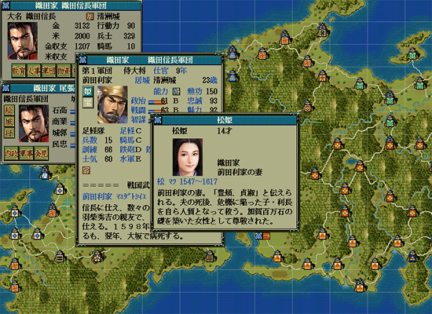
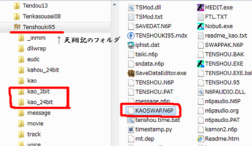

<h2><i class="fa fa-image fa-fw"></i>フルカラー顔キット</h2>

<ul class="checklist">
    <li>
    <h3>概要</h3>
    <p>要するにこうなる<br>
    ↓<br>
    </p>
    <p></p>
    <li>
    <h3>ダウンロード</h3>
    <dl>
        <dt>
        <div class="download_file">DOWNLOAD ⇒ <a href="./cnt_img/face_kaoswap_td/KAOSWAP.zip">KAOSWAP.N6P</a>ファイル。</div>
        </dt>
        <dd>
        <div class="update_time">└更新日 %(year)04d/%(mon)02d/%(mday)02d</div>
        </dd>
        <dt>
        <div class="download_file">DOWNLOAD ⇒ <a href="./cnt_img/face_kaoswap_td/kao_24bit.zip">kao_24bitの中身群</a>ファイル。</div>
        </dt>
        <dd>
        <div class="update_time">└更新日 %(year)04d/%(mon)02d/%(mday)02d</div>
        </dd>
        <dt>
        <div class="download_file">DOWNLOAD ⇒ <a href="./cnt_img/face_kaoswap_td/kao_3bit.zip">kao_3bitの中身群</a>ファイル。<br>
        <br>
        必須ではないですが、フルカラーの「入れ替え候補の顔(0001_B.bmpなど)に合わせて、 減色PAK(KAOSWAP.N6P)も変更する際、入れ替えの画素材として利用して下さい。</div>
        </dt>
        <dd>
        <div class="update_time">└更新日 %(year)04d/%(mon)02d/%(mday)02d</div>
        </dd>
    </dl>
    <li>
    <h3>動作環境</h3>
    <ul>
        <li>Windows XP 以降
        <li>フルカラーキット(フルカラーモード起動ddraw ver.<b>3</b>)が必要です。<br>
        ver.3 以降フルカラーの顔グラ群に対応しています。 ⇒<a href="?page=nobu_face_fullcolor">フルカラーキット</a>
        <li>フルカラーキットに含まれる｢顔フルカラーキット.zip ｣の中身を読んで利用しましょう。</li>
    </ul>
    <h3>使用方法</h3>
    <ul>
        <li>kao_24bitのディレクトリをそのまま所定の位置へ
        <li>kao_3bitのディレクトリを同じような所定の位置へ(これは必須ではない。)
        <li>ダウンロードしたkaoswapを天翔記フォルダーへ上書き。
        <li>ディレクトリ構成イメージ<br>
        <p></p>
    </ul>
    <h3>備考</h3>
    <ul>
        <li>kaoswapとkao_24bitの中身は全て顔が一致しています。
        <li>評定や披露など、顔が８つ出てくる箇所はフルカラーキットでは対応していません。<br>
        (８色の顔が突然出現します)<br>
    </ul>
</ul>